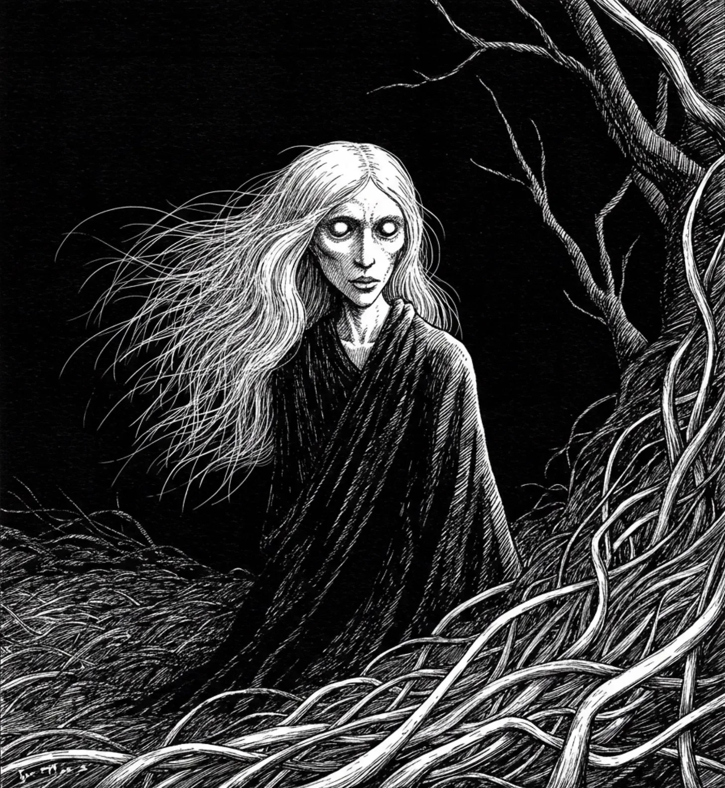

뒤틀린 뿌리들이 어둠 속 흙에서 자리를 찾으려는 창백한 뱀들처럼 그녀의 발밑에서 휘감겨 있었고, 그 모습은 다른 이들은 느끼지 못하는 바람에 춤추는 그녀의 무색한 머리카락의 거친 가닥들과 닮아 있었다.
[The twisted roots coiled beneath her feet like pale serpents seeking purchase in the dark soil, matching the wild strands of her colorless hair that danced in a wind no one else could feel.]
수세기 동안 깜빡이지 않았던 텅 빈 달 같은 원반인 그녀의 눈은 자신의 숲에 우연히 들어선 인간을 호기심과 오래된 갈증이 뒤섞인 시선으로 살폈다. 나무 사이로 그녀를 따라다니는 속삭임은 목소리가 아닌 기억들, 태고의 시간부터 그녀가 모아온 영혼의 파편들이었으며, 각각은 그녀의 끝없는 존재의 태피스트리에 실 한 올이었다.
[Her eyes—those hollow lunar discs that hadn’t blinked in centuries—surveyed the mortal who had stumbled into her grove with a mixture of curiosity and ancient hunger. The whispers that followed her through the trees weren’t voices but memories, fragments of souls she’d gathered through time immemorial, each one a thread in the tapestry of her endless existence.]
그들은 그녀를 ‘숲의 여인'이라 불렀지만, 옛 왕들이 몰락하고 그들의 돌로 된 성이 먼지로 무너진 이후로 어떤 살아있는 혀도 그녀의 진짜 이름을 말한 적이 없었다.
[They called her the Lady of the Thicket, though no living tongue had spoken her true name since the old kings fell and their stone castles crumbled to dust.]
그녀는 세계와 세계 사이를 오가며, 결코 넘어서는 안 될 경계의 수호자이자, 심장박동과 마지막 숨결로만 갚을 수 있는 빚의 수금인이었다. 숲은 그녀의 존재 주위로 휘어졌고, 가지들은 꼬여 전에 없던 길을 만들어냈으며, 뿌리들은 솟아올라 그녀의 인내심 있는 추적에서 도망치려는 이들을 걸어 넘어뜨렸다.
[She moved between worlds, guardian of boundaries that should never be crossed, collector of debts that could only be paid in heartbeats and last breaths. The forest bent around her presence, branches twisting to create pathways where none existed before, roots rising to trip those who sought to flee her patient pursuit.]
그녀가 마침내 한밤중의 로브 주름에서 손을 들어올렸을 때, 그 손은 뼈만 남거나 부패한 것이 아니라 끔찍한 우아함을 지니고 있었다—그녀의 의지에 굴복하는 바로 그 가지들처럼 길게 늘어진 창백한 손가락들.
[Her hands, when she finally raised them from the folds of her midnight robe, were neither skeletal nor decayed but possessed a terrible elegance—pale fingers elongated like the very branches that bowed to her will.]
그녀가 걷는 곳에서는 시간이 다르게 흘렀다; 초는 시간처럼 늘어지고, 일생은 심장박동으로 압축되었다. 그녀는 죽음도 삶도 아닌 그 사이의 무언가—여자의 얼굴을 쓰는 법을 배운 굶주린 부재, 인내심 있는 공허였다. 그리고 그녀가 앞에 있는 얼어붙은 인물에게 다가갈 때, 숲은 이후에 일어날 일에 대한 경외심으로 침묵에 빠졌다.
[Time flowed differently where she walked; seconds stretched like hours, lifetimes compressed to heartbeats. She was neither death nor life but something in between—a hungry absence, a patient void that had learned to wear a woman’s face. And as she drifted toward the frozen figure before her, the forest fell silent in reverence to what would follow.]